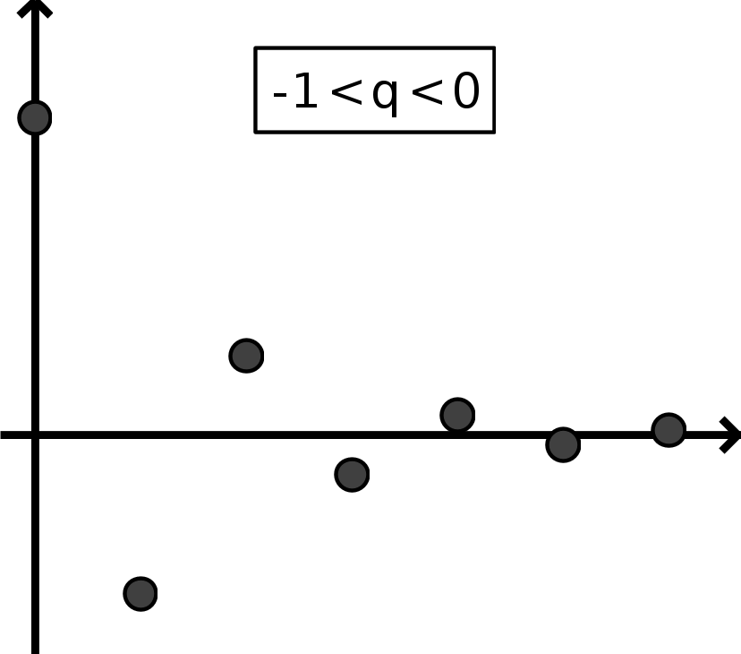
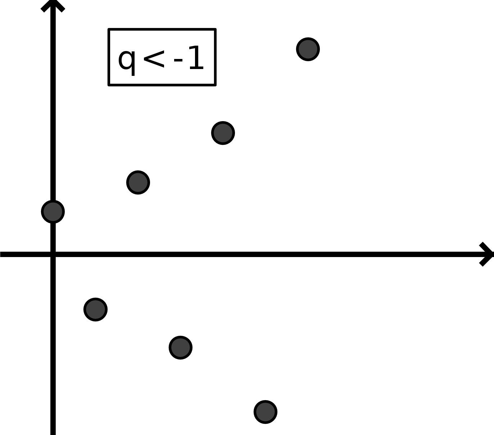
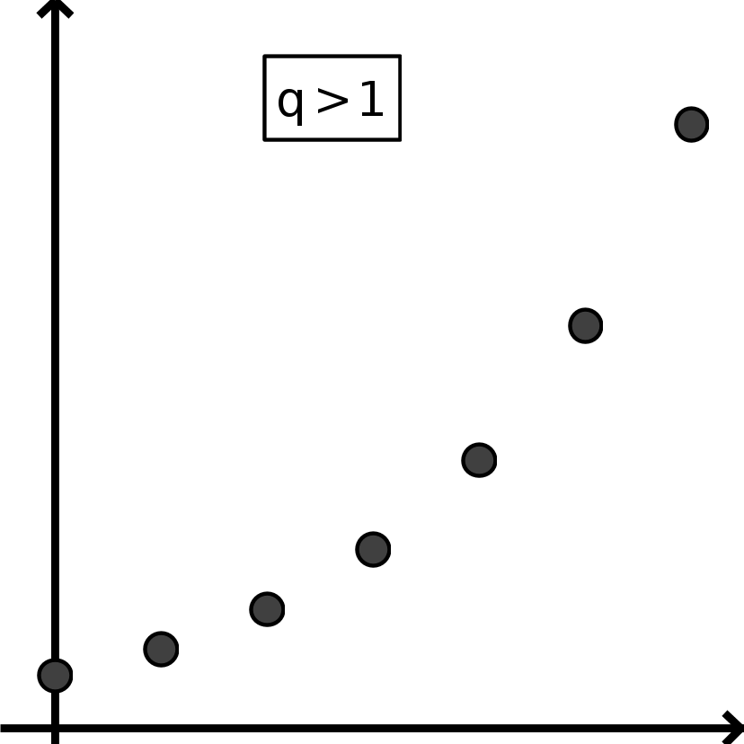

Suites - Cours
Généralités : rappels 1ère
Exemples
- Nombres pairs : 0 ; 2 ; 4 ; 6 ; 8 ; ...
- Alternée 1 ; -1 ; 1 ; -1 ; 1 ; -1 ; ...
- QI : 3 ; 5 ; 7 ; ? ; ...
- de Conway (audiodescriptive) : 1 ; 11 ; 21 ; 1211 ; 111221 ; 312211 ; ...
Éviter de parler du premier/deuxième et préférer «terme de rang ...» si le contexte n'est pas parfaitement clair.
Définition, notations
-
Une suite est une fonction de \(\mathbb{N}\) vers \(\mathbb{R}\). En effet, à
chaque rang
(nombre entier), elle associe un nombre (réel).
Notation : On note \((u_n)\) (avec des parenthèses) la suite \(u_0~;~u_1~;~u_2~;~u_3~;~...\) - Le nombre \(u_n\) est appelé terme de rang \(n\).
- Dans certains cas, il peut être préférable de commencer la suite à partir d'un rang \(n_0>0\)
On pose \(u_n=3^n\). On définit ainsi une suite \((u_n)\) dont les premiers termes sont :
\(u_0=3^0=1\) ; \(u_1=3^1=3\) ; \(u_2=3^2=9\) ; \(u_3=3^3=27\) ; \(u_4=3^4=81\) ; ...
Cette suite peut être représentée comme-ci :
\(\left(3^n\right)_{n\in\mathbb{N}}\) sur un axe :
\(\left(3^n\right)_{n\in\mathbb{N}}\) dans le plan :
Sens de variation
- La suite \((u_n)\) est dite strictement croissante lorsque pour tout entier naturel \(n\), on a \(u_n < u_{n+1}\).
- La suite \((u_n)\) est dite croissante lorsque pour tout entier naturel \(n\), on a \(u_n\leqslant u_{n+1}\).
- La suite \((u_n)\) est dite strictement décroissante lorsque pour tout entier naturel \(n\), on a \(u_n > u_{n+1}\).
- La suite \((u_n)\) est dite décroissante lorsque pour tout entier naturel \(n\), on a : \(u_n\geqslant u_{n+1}\).
- Une suite croissante ou décroissante est appelée suite monotone.
La suite \((u_n)\) définie pour tout entier naturel \(n\) par \(u_n=E\left(\dfrac{x}{2}\right)\) (premiers termes : \(u_0=0\) ; \(u_1=0\) ; \(u_2=1\) ; \(u_3=1\) ; \(u_4=2\) ; ...) est croissante mais pas strictement croissante.
Montrons que cette suite est strictement décroissante :
| \(u_{n+1}-u_{n}\) | \(=\) | \(1-5(n+1)-(1-5n)\) |
| \(=\) | \(-5\) |
| \(u_{n+1}-u_n\) | variation de \((u_n)\) |
|---|---|
| st. positif | st. croissante |
| positif | croissante |
| négatif | décroissante |
| st. négatif | st. décroissante |
- En étudiant le signe de \(u_{n+1}-u_n\).
- En étudiant les variations de la fonction \(f(x)=2x^2-x\).
- En général, si \(u_n=f(n)\), a-t-on :
\(f\) croissante \(\Rightarrow\) \((u_n)\) croissante ? La réciproque est-elle vraie ?
Suites bornées
- On dit que \((u_n)\) est minorée (par \(m\), dit «minorant») si pour tout entier \(n\) on a : \(m\leqslant u_n\).
- On dit que \((u_n)\) est majorée (par \(M\), dit «majorant») si pour tout entier \(n\) on a : \(u_n\leqslant M\).
- Une suite majorée et minorée est dite bornée.
- Démontrer que la suite \((u_n)\) définie par \(u_n=100+20n-n^2\) est majorée.
- Démontrer que la suite \((v_n)\) définie par \(v_n=\frac{1}{n+20}\) est bornée.
Générer une suite
Si \(u_n\) est donné directement en fonction de \(n\) :
On peut alors calculer tous les termes de la suite directement : c’est l’idéal.
Mais ce n'est pas toujours le cas.
Si \((u_n)\) est définie par récurrence :
On dispose d’un moyen (formule, algorithme) permettant de passer d’un terme au suivant :
\(u_{n+1}\)
est donné
en
fonction de \(u_n\) (ou bien \(u_n\) est donné en fonction de \(u_{n-1}\)) ;
on dispose donc d'une relation de récurrence ; certains termes doivent être
connus
car des suites distinctes peuvent admettre la même relation de récurrence !
- Pour \(u_{n+1} = 2u_n\), la fonction associée est \(f(x)=2x\)
- Pour \(v_n = v_{n-1}^2 + 1\), c'est \(g(x) = x^2 + 1\).
Attention : ne pas confondre cette fonction avec la fonction qui donne directement \(u_n\) en fonction de \(n\), si celle-ci existe (ou que l'on cherche à la découvrir).
Suites arithmétiques et géométriques : rappels 1ère
| Suites arithmétiques | Suites géométriques | |
|---|---|---|
| Relation de récurrence |
Une suite \((u_n)\) est arithmétique s'il existe un réel \(r\) (indépendant de
\(n\)) tel
que pour
tout
\(n\),
\(u_{n+1}=u_n+r\). Le réel \(r\) s'appelle la raison de la suite. |
Une suite \((u_n)\) est géométrique s'il existe un réel \(q\) (indépendant de
\(n\))
tel que
pour tout
\(n\),
\(u_{n+1}=q\times u_n\). Le réel \(q\) s'appelle la raison de la suite. |
| Interprétation | On passe d'un terme de la suite au suivant en ajoutant un même nombre \(r\). | On passe d'un terme de la suite au suivant en multipliant par un même nombre \(q\). |
| Caractérisation | \(u_{n+1}-u_n\) est constante, égale à \(r\). | \(\frac{u_{n+1}}{u_n}\) est constante, égale à \(q\). |
| Fonction associée (récurrence) | \(u_{n+1}=f\left(u_n\right)\) avec \(f(x)=x+r\) | \(u_{n+1}=f\left(u_n\right)\) avec \(f(x)=qx\) |
| Exemples |


|




|
| Formules |
|
|
| Limites |
|
|
Principe de récurrence
Énoncé dépendant d'un entier \(n\)
vrai ou bien faux (on parle de valeur de vérité ou bien de
valeur
booléenne de l'énoncé).
But du principe de récurrence
- On rappelle que par définition du symbole \(\sum\), on a \(\displaystyle\sum_{k=0}^n {k^2}=1+2^2+3^2+\cdots+n^2\).
- L'égalité présentée dans cet exemple résume le calcul d'une somme longue à un calcul simple.
- Il n'est pas évident, a priori, que cette égalité soit vérifiée pour tout entier \(n\).
- Le but du principe de récurrence est démontrer des relations pour une infinité de «rangs».
Méthode du principe de récurrence
- Initialisation : On vérifie que \(H_0\) est vraie.
- Hérédité : On considère la propriété \(H_n\) vraie (pour un rang \(n\) fixé) et on démontre que dans ce cas, \(H_{n+1}\) l'est aussi.
- Conclusion : S'il y a initialisation et hérédité, alors \(\forall n\in\mathbb{N}\), \(H_n\) est vraie.
- Initialisation : On vérifie que \(H_0\) est vraie (on remplace \(n\)
par
\(0\) et on
vérifie
l'égalité) :
\(\displaystyle\sum_{k=0}^0 {k^2}=0\) et \(\dfrac{0(0+1)(0n+1)}{6}=0\), donc \(\displaystyle\sum_{k=0}^n{k^2}=\dfrac{0(0+1)(0n+1)}{6}\), donc \(H_0\) estvraie. - Hérédité : Considérons \(H_n\) vraie pour un rang \(n\) fixé et
démontrons
\(H_{n+1}\)
:
-
d'une part :
\( \displaystyle\sum_{k=0}^{n+1}{k^2} = \) \(\displaystyle\sum_{k=0}^{n}k^2\)\(+(n+1)^2\) ← on utilise l'hypothèse de récurrence, et on développe :
\( = \) \(\dfrac{n(n+1)(2n+1)}{6}\)\(+(n+1)^2 = \dfrac{2n^3+3n^2+n}{6}+n^2+2n+1 =\dfrac{1}{3}n^3+\dfrac{3}{2}n^2+\dfrac{13}{6}n+1 \) -
d'autre part :
\( \dfrac{(n+1)[(n+1)+1][2(n+1)+1]}{6} = \dfrac{(n+1)(n+2)(2n+3)}{6} \), et on développe :
\( = \dfrac{(n^2+3n+2)(2n+3)}{6} = \dfrac{2n^3+9n^2+13n+6}{6} = \dfrac{1}{3}n^3+\dfrac{3}{2}n^2+\dfrac{13}{2}n+1 \)
alors \(\displaystyle\sum_{k=0}^{n+1}{k^2}=\dfrac{(n+1)[(n+1)+1][2(n+1)+1]}{6}\), et ainsi \(H_{n+1}\) est vraie. -
d'une part :
- Conclusion : Il y a initialisation et hérédité, alors \(\forall n\in\mathbb{N}\), \(H_n\) est vraie.
- Il est possible qu'un énoncé soit faux pour quelques termes initiaux puis vrai à partir d'un rang donné (faux pour \(n=0\) et vrai à partir de \(n=1\), ou bien \(n=10\)...) ; il est alors tout à fait possible d'initialiser la récurrence à partir de ce rang-là (on vérifie \(H_1\) ou bien \(H_{10}\) dans la partie initialisation) pour démontrer que l'énoncé est vrai à partir de ce rang.
- L'initialisation est importante et l'hérédité seule ne suffit pas !
On définit la suite \((q_n)\) par la relation \(\left\{\begin{array}{l}q_{n+1}=2+2n+q_n\\ q_0=-1 \\ \end{array} \right.\). Démontrer que pour tout entier \(n\), on a \(q_n=n^2+n-1\).
- Calculer \(d_2\), \(d_3\) et \(d_4\).
- Démontrer par récurrence que \(d_n=\sqrt{4n-3}\).
Sommes des termes d'une suite
| Sommes arithmétiques | sommes géométriques | |
|---|---|---|
| Formules de base | \(\displaystyle\sum_{k=0}^{k=n}k=0+1+2+...+n=\frac{n(n+1)}{2}\) | \(\displaystyle\sum_{k=0}^{k=n}q^k=1+q+q^2+...+q^n=\frac{q^{n+1}-1}{q-1}\) |
| Applications | \begin{eqnarray*} &&\displaystyle\sum_{k=0}^{k=n}u_k=(n+1)u_0+\frac{n(n+1)}{2}r \\ &&\displaystyle\sum_{k=1}^{k=n}u_k=nu_1+\frac{(n-1)n}{2}r \\ \end{eqnarray*} | \begin{eqnarray*} &&\displaystyle\sum_{k=0}^{k=n}u_k=u_0\frac{q^{n+1}-1}{q-1} \\ &&\displaystyle\sum_{k=1}^{k=n}u_k=u_1\frac{q^{n}-1}{q-1} \\ \end{eqnarray*} |
Y a-t-il d'autres démonstrations ?
Limite d'une suite
Définitions
On dit que \(\left(u_n\right)_{n\in\mathbb{N}}\) tend vers \(l\) et on note \(\displaystyle\lim_{n\to+\infty}u_n=l\) lorsque tout intervalle ouvert contenant \(l\) contient toutes les valeurs \(u_n\) à partir d'un certain rang.
- On dit que \(\left(u_n\right)_{n\in\mathbb{N}}\) tend vers \(+\infty\) et on note \(\displaystyle\lim_{n\to+\infty}u_n=+\infty\) lorsque tout intervalle de la forme \(\left]A;+\infty\right[\) contient toutes les valeurs \(u_n\) à partir d'un certain rang.
- On dit que \(\left(u_n\right)_{n\in\mathbb{N}}\) tend vers \(-\infty\) et on note \(\displaystyle\lim_{n\to+\infty}u_n=-\infty\) lorsque tout intervalle de la forme \(\left]-\infty;A\right[\) contient toutes les valeurs \(u_n\) à partir d'un certain rang.
Démontrer que si une suite \((u_n)\) converge vers \(l\), alors cette limite \(l\) est unique.
On raisonnera par l'absurde en supposant qu'\((u_n)\) converge aussi vers \(l'\neq l\) ; on pourra comparer les valeurs de la suite, à partir d'un certain rang, au nombre \(\dfrac{l+l'}{2}\) pour dégager une contradiction.
- Démontrer, par récurrence sur \(n\), que pour tout \(a>0\) et pour tout entier naturel \(n\) on a :\(\displaystyle(1+a)^n\geq 1+na\) (inégalité de Bernoulli).
- En déduire la limite de la suite \((q^n)\) lorsque \(q>1\).
- Discuter de la convergence de la suite \((q^n)\) selon les autres valeurs possibles de \(q\).
- Toute suite croissante majorée converge vers un certain \(l\in\mathbb{R}\).
- Toute suite décroissante minorée converge vers un certain \(l\in\mathbb{R}\).
- Justifier que \((u_n)\) tend vers un certain \(l\in\mathbb{R}\).
- Démontrer que tous les termes de \((u_n)\) sont inférieurs à \(l\).
On étudie donc la suite définie par \(u_{n+1}=\sqrt{u_n}\).
On se rappelle que pour \(0\leqslant x\leqslant 1\), on a \(\sqrt{x}\geqslant x\) et que pour \(x\geqslant 1\), on a \(\sqrt{x}\leqslant x\).
-
Dans cette partie, on considère que \(u_0\in\left]0;1\right]\)
- Démontrer que pour tout entier \(n\), on a \(0\leqslant u_n\leqslant u_{n+1}\leqslant 1\)
- En déduire que \((u_n)\) converge.
- Dans cette partie, on considère que \(u_0\in\left[1;+\infty\right[\). En utilisant un raisonnement analogue, démontrer que \((u_n)\) converge.
- Est-ce suffisant pour dire que \((u_n)\) converge vers 1 ?
- Écrire un algorithme ou un programme Python permettant de déterminer la plus petite valeur de \(n\) telle que \(u_n\) est proche de 1 à 0,001 près.
Démontrer que pour tout entier \(n\), on a \(2{,}5\leqslant q_{n+1}\leqslant q_n\leqslant 10\). fichier python, figure)
- Trouver deux suites divergentes dont le produit converge.
- Trouver deux suites divergentes dont le quotient converge.
Limites et opérations
| \(\lim u_n\) | \(l\) | \(l\) | \(l\) | \(+\infty\) | \(-\infty\) | \(-\infty\) |
|---|---|---|---|---|---|---|
| \(\lim v_n\) | \(l'\) | \(+\infty\) | \(-\infty\) | \(+\infty\) | \(-\infty\) | \(+\infty\) |
| \(\lim u_n+v_n\) | + | FI |
| \(\lim u_n\) | \(l\) | \(l\neq0\) | \(\pm\infty\) | \(0\) |
|---|---|---|---|---|
| \(\lim v_n\) | \(l'\) | \(\pm\infty\) | \(\pm\infty\) | \(\pm\infty\) |
| \(\lim u_n\times v_n\) | \(l\times l'\) | \(*\infty\) | \(*\infty\) | FI |
| \(\lim u_n\) | \(l\) | \(l\) | \(l\) | \(\pm\infty\) | \(\pm\infty\) | \(0\) |
|---|---|---|---|---|---|---|
| \(\lim v_n\) | \(l'\neq0\) | \(\pm\infty\) | \(0\) | \(l'\) | \(\pm\infty\) | 0 |
| \(\lim \frac{u_n}{v_n}\) | \(\frac{l}{l'}\) | \(0\) | \(*\infty\) | \(*\infty\) | FI | FI |
\(u_n=n^2+8n-\frac{1}{n}\) ; \(v_n=\frac{8}{5-3n}\) ; \(a_n=\frac{2}{-3\sqrt{n}}\) ; \(b_n=1-0{,}95^n\) ; \(c_n=4\times\left(\frac{2}{3}\right)^n\) ; \(d_n=\frac{3+3^n}{0{,}2^n-10}\) ;
- Montrer que pour tout \(n\geqslant2\), on a \(0\leqslant u_n\leqslant 1\).
- Étudier le sens de variation de la suite \((u_n)\).
- En déduire que \((u_n)\) converge vers un réel \(l\).
- Montrer que pour tout \(n\geqslant2\), on a \(u_n=\dfrac{n}{2(n-1)}\).
- En déduire la limite \(l\) de \((u_n)\).
- Déterminer le nombre de poissons dans l’aquarium le 1er janvier 2021.
- Justifier que, pour tout entier \(n\in\mathbb{N}\), on a \(u_{n+1} = 0{,}85 u_n + 45\).
- Montrer par récurrence que, pour tout entier \(n\in\mathbb{N}\), on a \(u_n \leqslant u_{n+1} \leqslant 300\). Que peut-on en déduire sur la suite \((u_n)\) ?
- Soit \((v_n)\) la suite définie pour tout entier \(n\in\mathbb{N}\), par : \(v_n = u_n - 300\)
- Montrer que la suite \((v_n)\) est géométrique, on précisera sa raison et son premier terme.
- En déduire l’expression de \(v_n\) en fonction de \(n\), puis celle de \(u_n\) en fonction de \(n\).
- Déterminer la limite de la suite \((u_n)\).
- Interpréter les résultats des questions 3 et 4 dans le contexte du phénomène observé.
- Pourquoi dit-on \(a\neq1\) ?
- On note \(r\) la solution de l'équation \(ax+b=x\).
Démontrer par récurrence sur \(n\) que pour tout entier naturel \(n\in\mathbb{N}\), on a :
\(u_n-r=a^n(u_0-r)\)
- Discuter, selon les valeurs des paramètres \(a\) et \(b\) et de \(u_0\), de la convergence de la suite \((u_n)\).
Les crédits à la consommation ou immobiliers indiquent un taux effectif global (ou TAEG) : lors d'un tel crédit, chaque année, la banque applique ce taux à la somme totale restante dûe par l'emprunteur pour calculer ses intérêts qui s'ajoutent à la somme dûe.
- En utilisant et en complétant ce tableau, déterminer en combien d'années sera remboursé un crédit de 10 000€ dont le TAEG est de 3%.
- Modéliser cette situation par une suite arithmético-géométrique. Interpréter la situation lorsque sa limite est \(\pm\infty\). On pourra utiliser ce script python.
Limites et comparaisons
\((u_n)\) et \((v_n)\) sont deux suites telles qu'à partir d’un certain rang \(n_0\), on a, pour tout entier \(n\geq n_0\) : \(u_n \leq v_n\) ;
- Si \((u_n)\) tend vers \(+\infty\), alors \((v_n)\) tend vers \(+\infty\)
- Si \((v_n)\) tend vers \(-\infty\), alors \((u_n)\) tend vers \(-\infty\)
Si \(l\) est un réel et \((u_n)\), \((v_n)\) et \((w_n)\) sont trois suites telles que :
- à partir d’un certain rang \(n_0\), on a, pour tout entier \(n\geqslant n_0\) : \(u_n \leqslant v_n \leqslant w_n\) ;
- \((u_n)\) et \((w_n)\) tendent vers \(l\) ;
| \(u_n=\dfrac{\sin(n)}{n}\) | \(v_n=\frac{n+(-1)^n}{n+1}\) | \(w_n=\sin(n)-2n\) | \(z_n=n\times \sin(n)-2n^2\) |
| \(u_n=n^2-200n\) | \(v_n=\frac{2n^2+3n}{10n^2-4}\) | \(w_n=\frac{2n^4+3n}{10n^7-4}\) | \(z_n=n^2-200n+\frac{1-n}{1-\frac{1}{n+2}}\) |
Deux suites : \((a_n)\) croissante et \((b_n)\) décroissante vérifiant \(\displaystyle\lim_{n\to+\infty}\left(b_n-a_n\right)=0\) sont dites adjacentes.
Montrer que toute suite bornée possède une sous-suite convergente (on pourra utiliser la dichotomie pour construire des suites adjacentes).